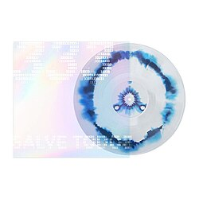

Discografia
Máquina do Tempo (2020)
Seu álbum de estreia que revolucionou o trap nacional. Com apenas 7 faixas, trouxe uma sonoridade futurista e consolidou Matuê como referência.
Ouvir no Spotify
Sabor Overdose no Yakisoba (2023)
Uma obra ousada que mistura rap, funk e trap com experimentações sonoras. Marcou a transição de Matuê para uma fase ainda mais criativa e independente.
Ouvir no Spotify

333 (2024)
Uma obra ousada que mistura rap, funk e trap com experimentações sonoras. Marcou a transição de Matuê para uma fase ainda mais criativa e independente.
Ouvir no Spotify